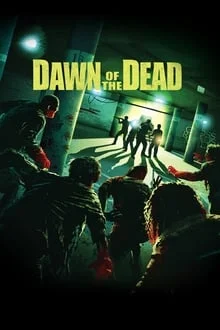

A nurse, a policeman, a young married couple, a salesman and other survivors of a worldwide plague that is producing aggressive, flesh-eating zombies, take refuge in a mega Midwestern shopping mall.
Company Credits:Strike Entertainment | New Amsterdam Entertainment | Metropolitan Filmexport
Release Date: March 19 ,2004
Genres:Action | Horror
Rating: 7.3 on Imdb
Run Time:101 Minutes